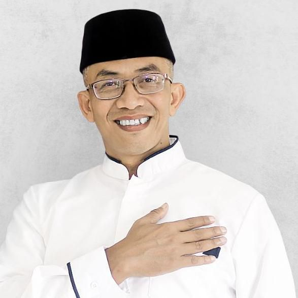
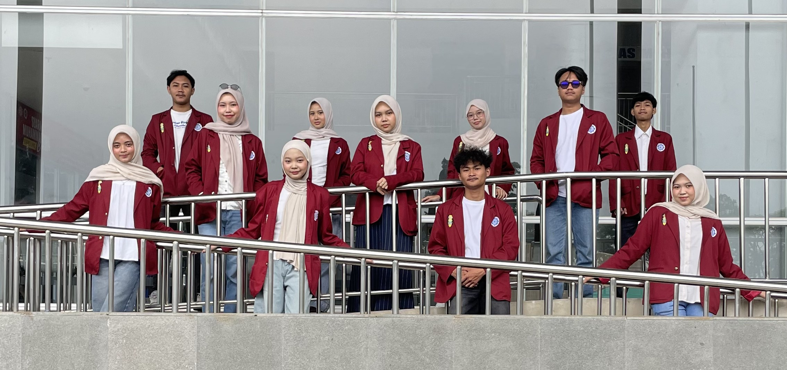

Universitas Muhammadiyah Bandung
Periode Agustus – September 2026KKN Desa Pamulihan 03 ditempatkan di Desa Pamulihan, Kecamatan Pamulihan, Kabupaten Sumedang selama masa pengabdian.
Tema besar kelompok kami adalah "Inovasi Berbasis Potensi Lokal untuk Desa Mandiri dan Berkelanjutan" — fokus pada bidang pendidikan, kesehatan, lingkungan, dan ekonomi warga.

Alat pengelolaan sampah untuk mendukung pemilahan sampah warga demi lingkungan yang lebih tertib dan berkelanjutan.
Sasaran: Seluruh warga desaMedia literasi digital yang mendukung pembelajaran siswa SD dan bisa diakses masyarakat umum.
Sasaran: Siswa SD & masyarakat umumVerifikasi data ATS jenjang SD, SMP, dan SMA sebagai bahan pendukung pemerintah desa di bidang pendidikan.
Sasaran: Anak usia sekolah SD–SMAMeningkatkan pemahaman peserta tentang pengelolaan keuangan syariah dan pentingnya perencanaan sejak dini.
Sasaran: Ibu-ibu & remaja desaPemasangan reflektor jalan di titik rawan untuk meningkatkan keamanan pengguna jalan, terutama malam hari.
Sasaran: Pengguna jalan desaSosialisasi interaktif untuk meningkatkan budaya literasi, pendidikan karakter, dan perilaku positif siswa SD.
Sasaran: Siswa sekolah dasarPapan edukasi waktu penguraian sampah sebagai media informasi untuk menumbuhkan kesadaran lingkungan warga.
Sasaran: Seluruh warga desaPembelajaran Al-Qur'an rutin bersama ustaz/ustazah setempat untuk anak-anak desa.
Sasaran: Anak-anak desaEdukasi pencegahan stunting, gizi seimbang, dan kesehatan ibu serta anak bagi masyarakat.
Sasaran: Ibu hamil & balitaPartisipasi mahasiswa dalam rangkaian kegiatan HUT RI untuk memperkuat kebersamaan dan semangat gotong royong.
Sasaran: Seluruh warga desa
Foto dokumentasi kegiatan akan ditambahkan seiring berjalannya program KKN.
Verifikasi data ATS jenjang SD, SMP, dan SMA di lingkungan desa.
Pembelajaran Al-Qur'an rutin bersama ustaz/ustazah setempat untuk anak-anak desa.
Edukasi pencegahan stunting, gizi seimbang, dan kesehatan ibu serta anak.
Sosialisasi interaktif literasi dan pendidikan karakter untuk siswa sekolah dasar.
Partisipasi mahasiswa dalam rangkaian kegiatan HUT RI bersama warga desa.
Sosialisasi pengelolaan keuangan sesuai prinsip syariah dan perencanaan sejak dini.
Pemasangan reflektor pada titik rawan untuk keamanan pengguna jalan malam hari.
Papan edukasi waktu penguraian sampah untuk meningkatkan kesadaran lingkungan warga.
Uji coba alat pemilahan sampah hasil inovasi kelompok bersama warga.
Peresmian website e-book sebagai media literasi digital bagi masyarakat dan siswa SD.
Ikuti media sosial kami untuk update kegiatan terbaru.
"KALO ADA ISI"